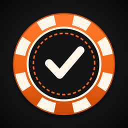

Chip Chaser
Track the dealer poker chips you've collected and the ones you're still chasing.
Get help
Found a bug, a missing or closed dealer, or have an idea? Open an issue and include the dealer's name and city if it's about a location.
Common questions
Where is my collection saved? On your iPhone, and in your own iCloud account when you're signed in to iCloud. It syncs to every iPhone signed in with the same Apple ID. Settings in the app shows whether iCloud sync is on.
I got a new phone. How do I get my chips back? Sign in with the same Apple ID and install Chip Chaser; your collection downloads from iCloud. Without iCloud, use Settings → Export Backup on the old phone and Import Backup on the new one.
A dealer is missing. Add it yourself with the + button on the Dealers tab; it counts like any other chip. Please also let us know so it can be added for everyone.
Can I hide Canadian locations, satellite stores or apparel shops? Yes, in Settings → What to Track.
Privacy
Chip Chaser collects no personal data. Read the privacy policy.